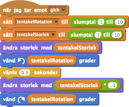

Checklista
För att få en tentakel att vifta, kan vi rotera den spriten och skala om den med ett litet
slumptalsom vi sparar i en variabel, vänta en kort stund och sedan återställa spriten till orginalstorleken.
(Såg du hur vi multiplicerar tentakelStorlek med -1 för att få dess negativa värde?)